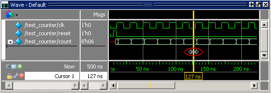
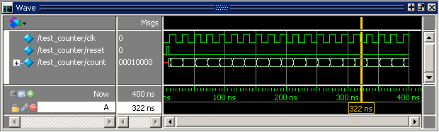

Let’s look
at the information provided when using a single cursor.
Procedure
- Position the cursor by clicking in the cursor
time line then dragging.
- Click
the Select Mode icon on the Wave window toolbar.
- Click anywhere in the cursor time line.
The cursor
snaps to the time where you clicked (Figure 1).
Figure 1. Working with a Single
Cursor in the Wave Window
- Drag the
cursor and observe the value pane.
The signal
values change as you move the cursor. This is perhaps the easiest
way to examine the value of a signal at a particular time.
- In the
waveform pane, position the mouse pointer over the cursor line.
When the pointer changes to a two-headed arrow (Figure 1), click and hold the left mouse button
to select the cursor. Drag the cursor to the right of a transition.
The cursor snaps to
the nearest transition to the left when you release the mouse button.
Cursors snap to
a waveform edge when you drag a cursor to within ten pixels of an
edge. You can set the snap distance in the Window Preferences dialog
box (select ).
- In the cursor time line pane, select the
yellow time line indicator box then drag the cursor to the right
of a transition (Figure 1).
The cursor
does not snap to a transition when you drag in the timeline pane.
- Rename
the cursor.
- Right-click Cursor
1 in the cursor pane, then select and delete the text.
- Type “A”
and press Enter.
The cursor
name changes to A (Figure 2).
Figure 2. Renaming a Cursor
- Jump the
cursor to the next or previous transition.
- Click
signal count in the pathname pane.
- Click
the Find Next Transition icon on the Wave
window toolbar.
The cursor
jumps to the next transition on the selected signal.
- Click
the Find Previous Transition icon on the
Wave window toolbar.
The cursor
jumps to the previous transition on the selected signal.